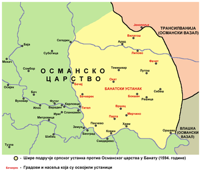
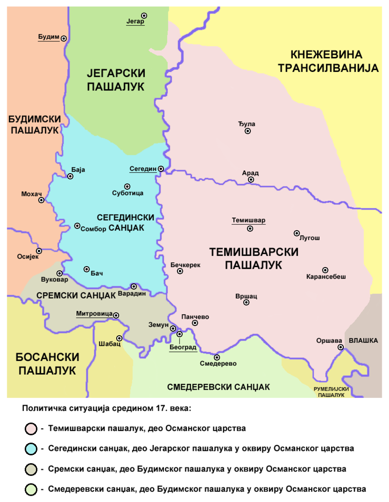
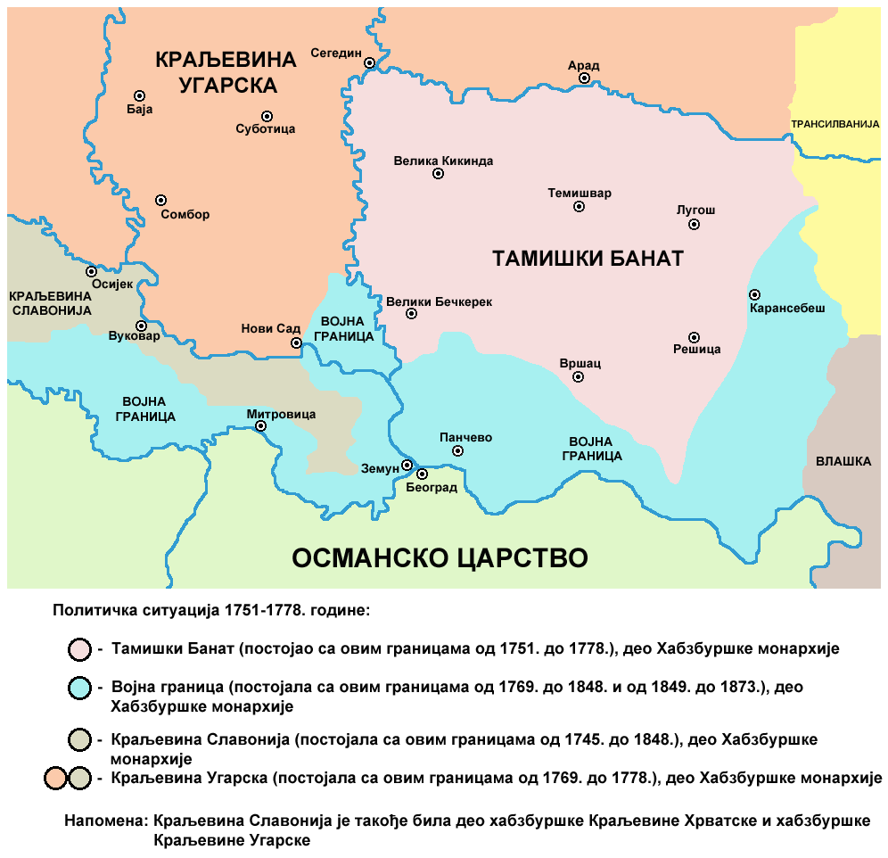

Home
How to get to Vršac?
Landmarks
Attractions
GuestBook
History of the City of Vršac
Famous People from Vršac
Jovan Sterija Popović — writer and playwright
Paja Jovanović — painter
Jaša Tomić — journalist, politician, and writer
Bora Kostić — chess player
Dragiša Brašovan — architect
Famous People from Vršac
Feliks Mileker — founder and curator of the City Museum
Rada Đuričin — actress
Judita Kofman — mathematician
Laza Nančić — socialist, journalist, writer, and founder of the Vršac Reading Room
  
×
English
Serbian